Estruturas de Dados Não Lineares
Prof. Juliano Fischer Naves
Estruturas de Dados Lineares
Possuem apenas um sucessor e um predecessor
Ex: Listas simplesmente encadeadas, listas duplamente encadeadas, filas, pilhas ...
Lista simplesmente encadeada
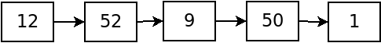
- 52 é predecessor de 9; 50 é sucessor de 9.
- 52 é sucessor de 12; 12 não possui predecessor.
Lista circular duplamente encadeada

- 50 é predecessor de 1; 12 é sucessor de 1.
- 42 é sucessor de 12; 1 é predecessor de 12.
Estruturas de dados não lineares
- Árvore
- Árvore binária
- Árvore binária de busca
- Heap
- Grafo
Árvore
- Utilizada em muitas aplicações
- Um modelo hierárquico
- árvore genealógica
- organograma de uma organização
- Conceito diretamente ligado a recursão

Árvore
- Um conjunto finito de elementos
- cada elemento é chamado de nó ou vértice da árvore
- arcos ou arestas ligam os nós
- Um nó é chamado de raíz
- Nós sem filhos são chamados de folhas
Árvore
- Os filhos de um nó são raízes de subconjuntos que são chamados de subárvores
- Na imagem, destacamos 3 subárvores
- As subárvores cujos nós B e C são raízes, são subárvores de A
- Por sua vez, G é a raíz de uma subárvore de C que só possui um nó, ele mesmo
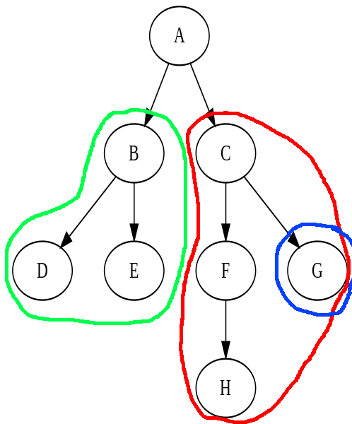
Árvore Binária
- Um tipo especial de árvore
- Cada nó pode ter no máximo 2 filhos
- Filho da esquerda e filho da direita

Árvore Binária
- A subárvore cuja raíz é o nó à esquerda de X, é denominada subárvore à esquerda de X
- A subárvore cuja raíz é o nó à direita de X, é denominada subárvore à direita de X
Árvore Binária
Subárvore à esquerda de 2
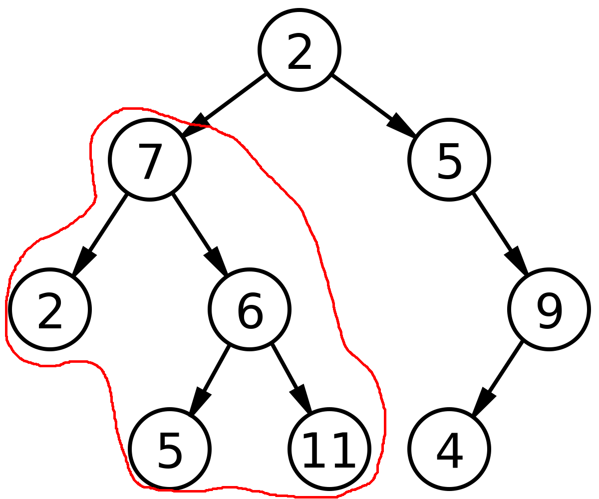
Árvore Binária
Subárvore à direita de 2
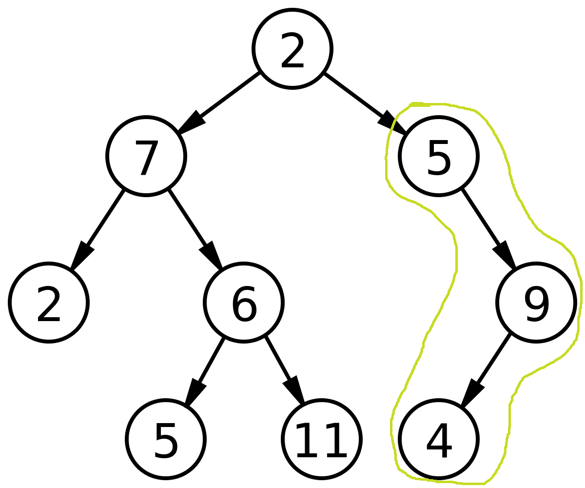
Árvore Binária
Subárvore à direita de 7
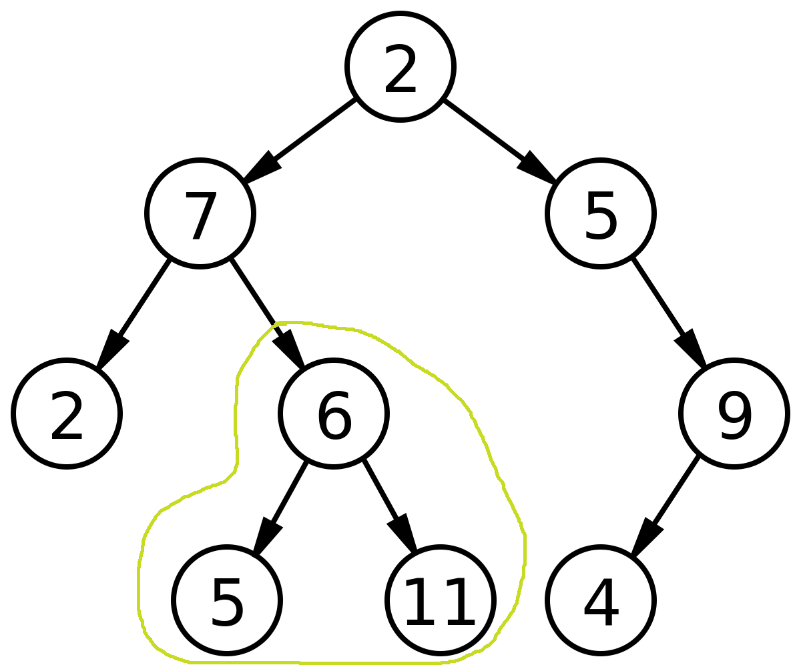
Árvore Binária de Busca
- Um tipo especial de árvore binária
- Todos os nós na subárvores à esquerda de um nó X, são menores que o nó X
- Todos os nós na subárvores à direita de um nó X, são maiores que o nó X
- Um novo nó sempre é inserido como folha
- Permite a busca rápida através da busca binária

Árvore Binária de Busca
Heap
É um tipo especializado de árvore que satisfaz a seguinte propriedade: se P é um nó pai de C, então a chave (valor) de P é maior (em um heap de máximo) ou menor (em um heap de mínimo) que a chave de C.
Aplicações: algoritmos que precisam recuperar rapidamente um dado de maior prioridade: filas de prioridade.
Heap de Máximo

Heap de Mínimo
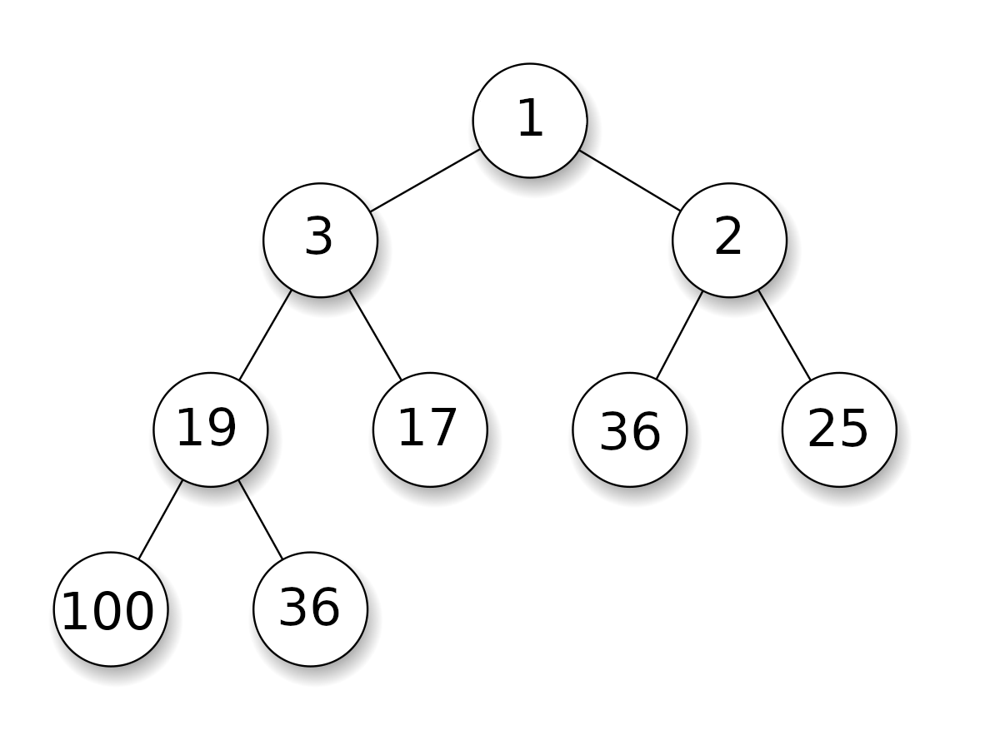Grafo
É uma estrutura de dados composta por um conjunto finito de nós (ou vértices) e um conjunto finito de arestas (ou arcos).

Grafo Dirigidos/Não Dirigidos
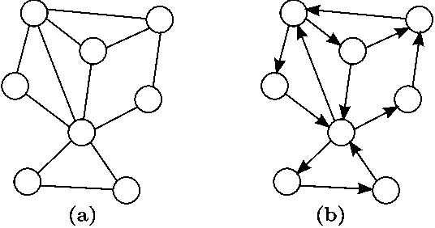
Grafo - Rede Social
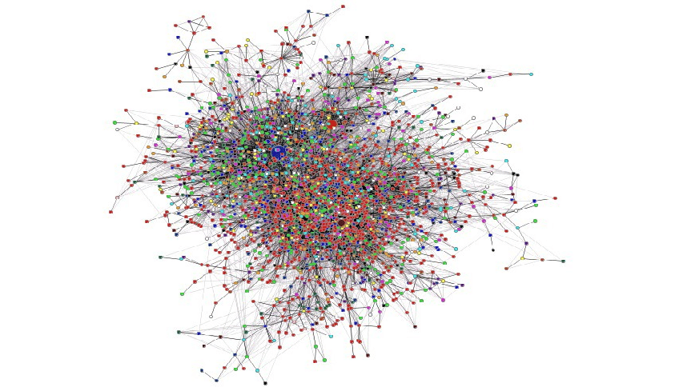
Grafo - Chamadas de Procedimentos
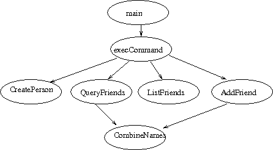
Grafo - Cidades
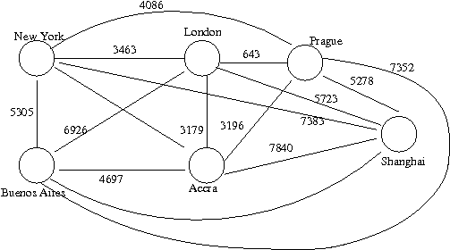
Grafo - Páginas Web
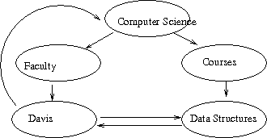
Grafo - Como representar?
Matriz de adjacência, lista de arestas, lista de adjacência e referência
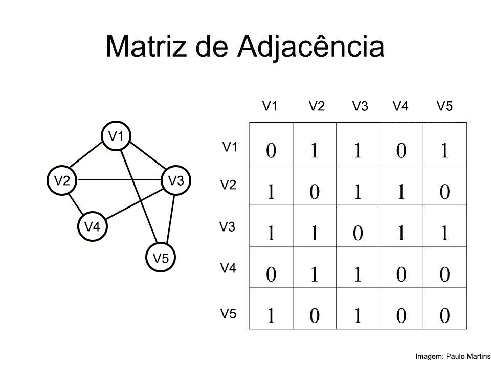
FIM
- por enquanto.